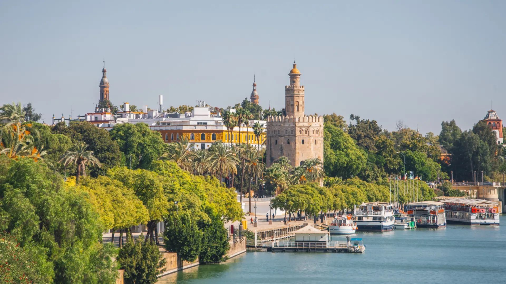
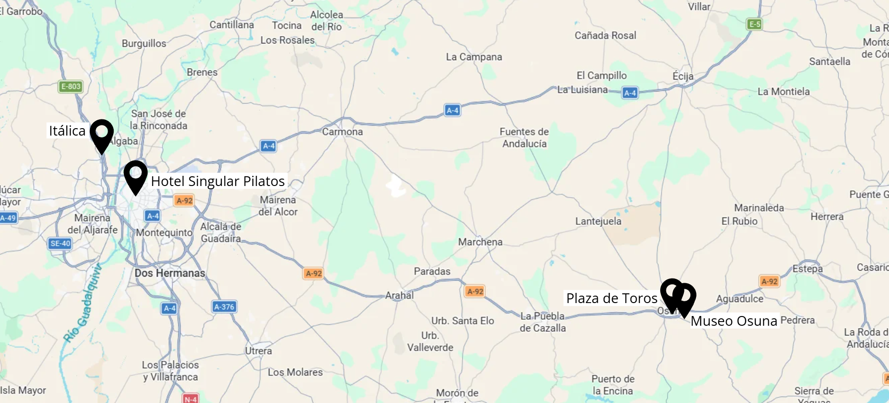

Sevilla es el punto de inicio de la ruta y uno de los escenarios más espectaculares de Juego de Tronos en España. Sus Reales Alcázares, declarados Patrimonio de la Humanidad, dieron vida a los Jardines del Agua del reino de Dorne, residencia de la Casa Martell.
La ciudad combina una arquitectura monumental única, herencia de siglos de historia, con un ambiente vibrante lleno de vida, tradición y color.

Durante la visita, el viajero podrá recorrer patios, salones y jardines que mezclan estilos islámicos, mudéjares y cristianos, mientras descubre cómo Sevilla se transformó en uno de los reinos más exóticos de Poniente. A todo ello se suma su rica gastronomía, el flamenco y celebraciones tan emblemáticas como la Semana Santa o la Feria de Abril, que convierten a Sevilla en una experiencia sensorial completa.
